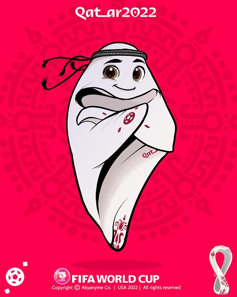

LAEEB
A Fifa apresentou o mascote oficial da Copa do Mundo de 2022. Trata-se de La'eeb, um simpático lenço de cabeça masculino tradicional da cultura árabe.O desenho do mascote é inspirado em lenços de cabeça tradicionais da cultura árabe. La’eeb foi apresentado dentro de um “mascote-verso” que, segundo a Fifa, é um “mundo paralelo onde vivem mascotes de torneios, onde ideias e criatividade formam a base de personagens que vivem na mente de todos”.